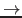

Next: Opensource contributions
Up: Experience
Previous: Experience
01.2013-presentBackend Developerhttp://deltamethod.comdeltamentod GmbHBerlinWorking on the backend for recommendation service.
Developing a recommendation system for improving online ads/ad
compaigns, using machine learning algorithms in python.
Tech: python, numpy, pandas, scikit-learn, pylab, ipython notebook
04.2011-12.2012Scala developerhttp://thenewmotion.comThe New MotionKyiv, Amsterdam
I was the second person, joining the client's remote dev team (9 people now). Had a chance to work on/initiate/lead
all the projects, company did.
Tech: scala, akka, scalaz, scalaxb, liftweb, dispatch,
protobuf, mysql, cassandra, specs2, scalacheck, js,
backbone.js, underscore.js, rabbitmq.
Projects:
-
- Car Sharing - Enabling companies share electric
cars among their employees.
-
- Car Online - Putting the electric vehicle
online. That is, get the information like accumulator
charge state, GPS coordinates, etc. from the car to our
servers, analyze, show that to the driver.
-
- Charge Network - Backend to operate charge points
across Netherlands. This is a place, where charge points
connect to, and get managing commands (like authorizing
users to perform a charging session based on chargepass,
rebooting the point, etc.) and software updates from.
-
- LoveToLoad - User portal for the chargenetwork,
where users can get details and statistics data on their
chargepoints and chargecards.
-
- Admin Portal - Place, where network administrators
manage the network through interfaces, provided by
the chargenetwork.
-
- Winterfell - A hub to exchange chargepoints status
notifications across multiple networks. For example, we
give our chargepoints statuses to oplaadpalen.nl.
-
- Bitlment - An internal project, that processes
chargesessions to generate billings.
-
- MSP - Internal CRM project.
02.2011-04.2011Android Developerhttp://ciklum.net/CiklumKyivDevelopment of the main app backend and frontend framework.
Tech: java, android api’s.
06.2010-02.2011Android Java/Automation Test Engineer  Android Developer Senior Software Engineerhttp://cogniance.com/Cogniance inc.Kyiv
-
- INQ Mobile: Development of the internal testing framework, unit and smoke tests for the platform in terms of that framework. Development of the backend for syncing facebook events with android calendar. Final product is INQ Cloud Touch device.
-
- Laszlo Systems: Development of the mobile app for laszlo webtop server solution.
-
- Buildabrand: Designing and implementing new relevant
search architecture and algorithms.
Tech: robotium solo, android platform frameworks, android apps; lucene, spring, hibernate, wordnet.
Next: Opensource contributions
Up: Experience
Previous: Experience
2013-05-17